← Voltar para o site
Na estrada
Galeria de fotos.
Bastidores, palcos e cidades da turnê da Loss pelo Brasil e pela Europa. Clique numa foto para ver em tamanho maior.
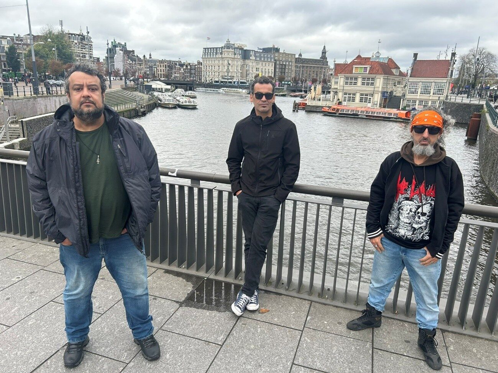
Amsterdã, Holanda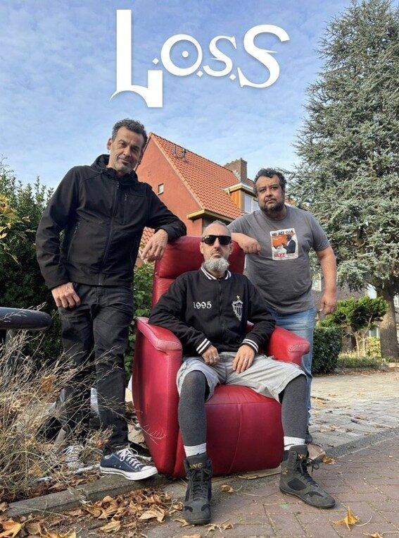
Holanda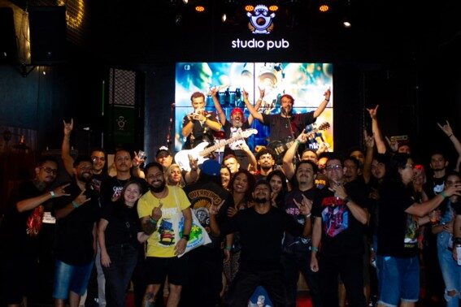
Belém PA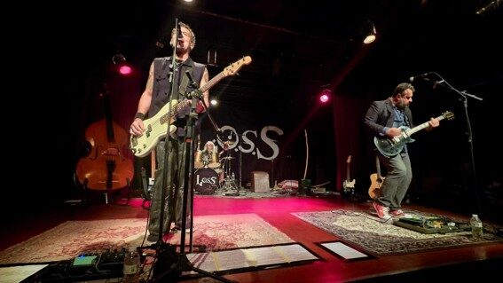
Belo Horizonte - Palácio das Artes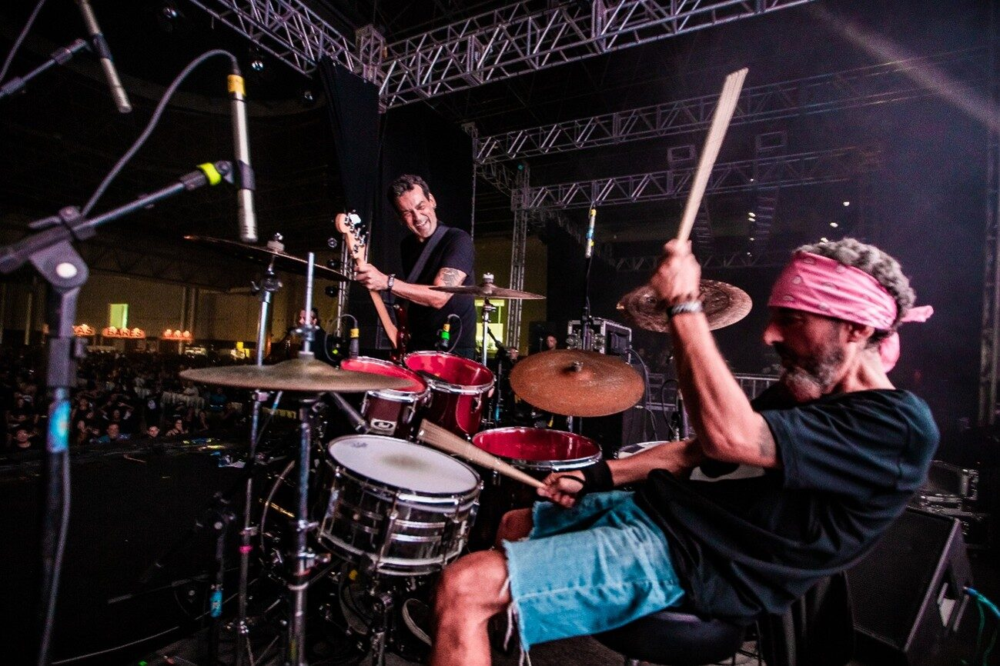
Belo Horizonte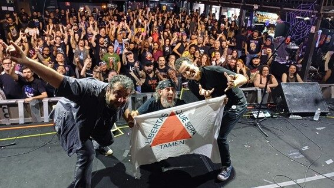
Belo Horizonte MG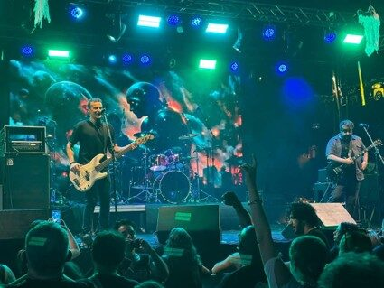
Campinas SP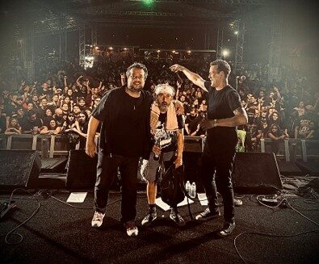
Contagem MG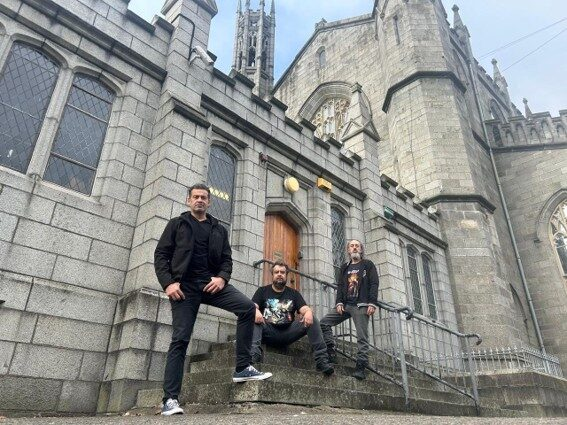
Irlanda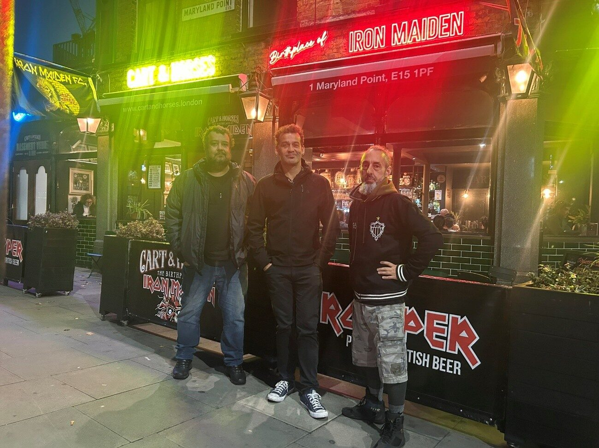
Cart & Horses, Londres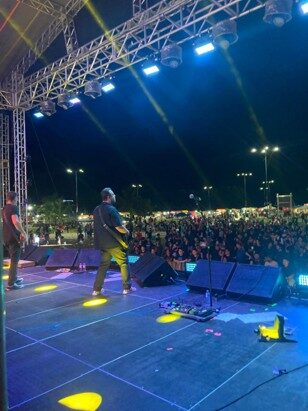
Macapá PA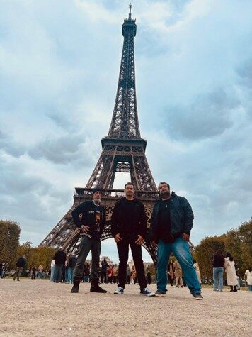
Paris, França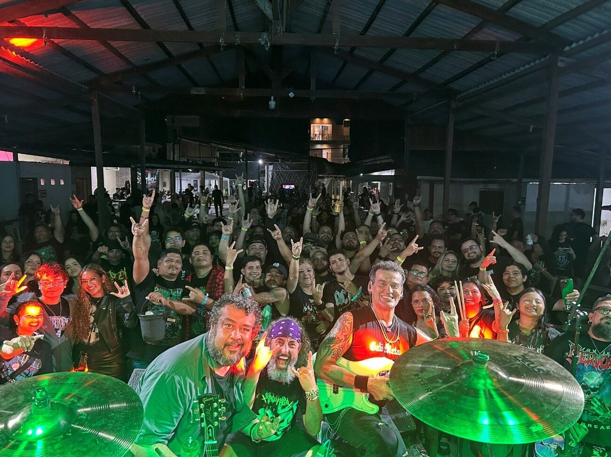
Portel - Ilha de Marajó - PA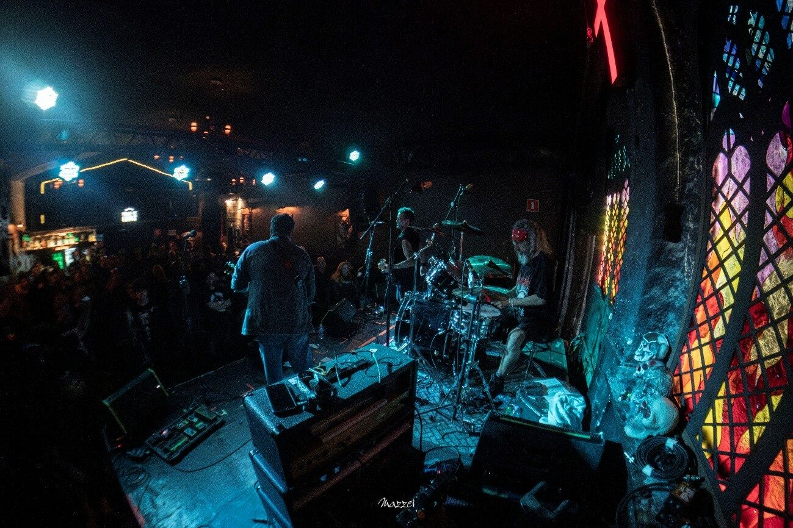
La Iglesia São Paulo SP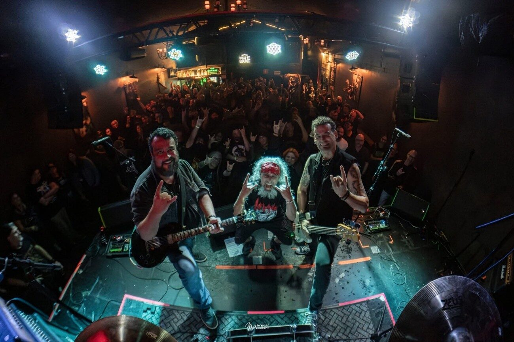
La Iglesia São Paulo SP